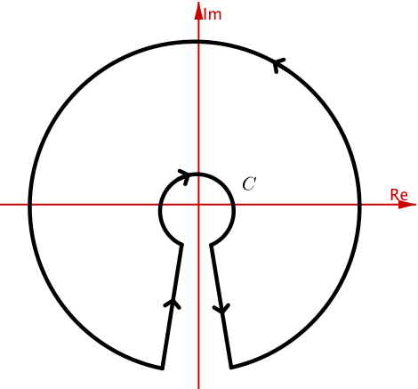

MATH3401
Complex Analysis
Lecture 8
Inverse of \(\exp\)

Too much to hope for "\(?=\log = \log_e\)", due to \(\exp\) being periodic (period \(2\pi i\)) in \(\C\).
Inverse of \(\exp\)
Note that \(e^w=z\). Write \(z = r e^{i \Theta}\), with \(r> 0\) and \(\Theta = \Arg(z) \in (-\pi, \pi]\).
Write \(w= u+iv\). Then \(z = e^{w} = e^{u+iv} = e^u e^{iv} \).
This implies \[ \left\{ \begin{align*} e^u &= r \\ v &= \Theta + 2 k \pi ,\; k\in \Z \end{align*} \right. \]
Inverse of \(\exp\)
So \(u = \ln r\), meaning logarithm to the base \(e\) of the positive real number \(r\).
So \[ \begin{align*} w &= u + iv \\ &= \ln r + i (\Theta + 2 k \pi),\; k\in \Z \\ &= \ln |z| + i \,\arg(z) \end{align*} \]
Inverse of \(\exp\)
This defines the multi-valued function \(\log\) on \(\C_*\).
Note: \(\exp\left(\log z\right) = z\) and \(\log\left(\exp z\right)= z+ 2 k \pi \,i\)
📝 Check: \[ \left\{ \begin{align*} \log \left( z \,\xi \right) &= \log z + \log \xi \\ \log \left( \frac{z }{\xi} \right) &= \log z -\log \xi \end{align*} \right. \]
Inverse of \(\exp\)
As with \(\Arg\)/\(\arg\), define \[\Log (z) = \ln |z| + i \Arg(z) \text{ on } \C_*.\]
\(\Log\) is a single valued, but discontinuous on the negative real axis \(\cup \{0\}\), since \(\Arg\) is.
Indeed, \(\Arg\)/\(\Log\) are not even defined at \(0\).
\(\Log\) is called the principal logarithm. As with \(\Arg\), there may hold: \[ \Log\left(z_1 z_2\right)\neq \Log z_1 + \Log z_2. \]
Complex exponent
Take \(c\in \C\). Set \[ z^c \exp \left( c \log z\right), \quad z\neq 0. \]
Note: corresponds to usual index laws for \(c=n\in \Z\) ; and for \(c=1/n\), we recover what we did in Lecture 4.
Remark: Brown & Churchill defines \(z^{1/n}\) as a multi-valued function, and in particular defines the Principal Value, that is \[ \text{PV}\left(z^{1/n}\right) = |z|^{1/n}\exp \left(\frac{i \Arg(z)}{n}\right). \]
Complex exponent
Same procedure works for \(z\mapsto z^c\): \[ \begin{align*} \text{PV}\left(z^{c}\right) &= \exp \big(c\,\Log (z)\big) \\ &= \exp\big(c \ln |z| + i \,c\, \Arg (z)\big). \end{align*} \]
E. g. \(\text{PV}\left[(1-i)^{4i}\right]\):
\(\qquad\qquad =\exp\big( 4i \left[ \ln |1-i| + i \Arg (1-i) \right] \big)\)
\(\qquad\qquad =\exp\big( 4i\ln\sqrt{2} -4(-\pi/4) \big)\)
\(\qquad\qquad =e^{\pi} \exp \left(4i\ln \sqrt{2}\right)\)
\(\qquad\qquad =e^{\pi} \cos \left(2\ln 2\right) + i\, e^{\pi} \sin \left(2\ln 2\right)\).
Complex exponent
Remark: Sometimes we need to use a different single-valued
\(\log\;\) and \(\;\arg \),
e. g. we may need to integrate around a contour like this:
Remark
In this case, choose/define \({\Large\mathcal a}\mathcal{rg }(z)\) such that \[ -\frac{\pi}{2}< {\Large\mathcal a}\mathcal{rg }(z) \leq \frac{3\pi}{2} \] where this \({\Large\mathcal a}\mathcal{rg }(z)\) is a particlar value of \(\arg(z)\): Leads to a new, single-valued \(\mathcal \Log\), etc.